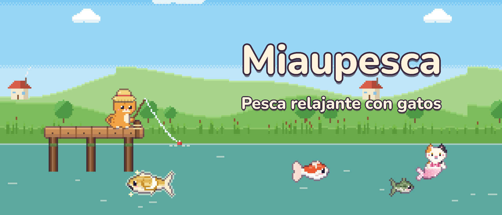
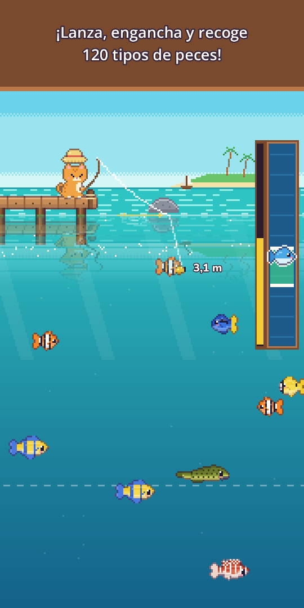
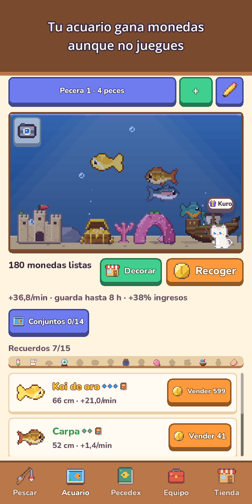
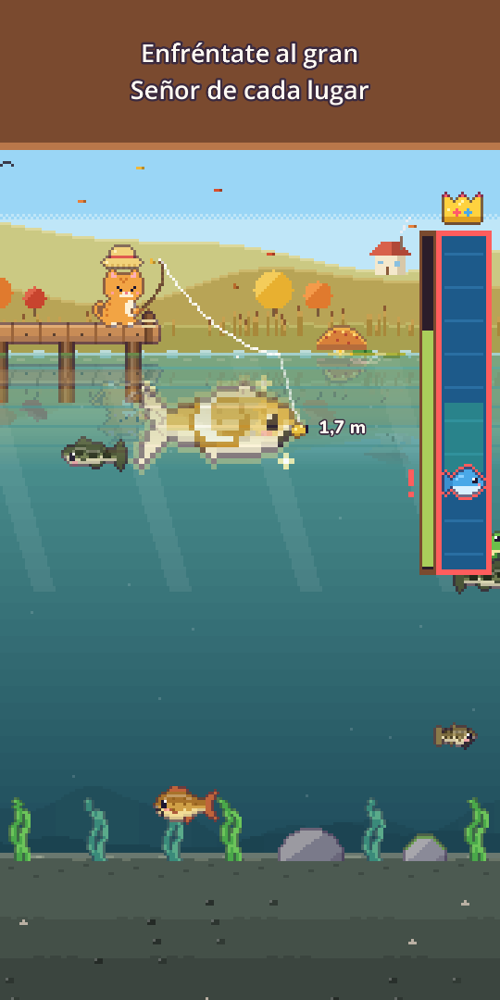
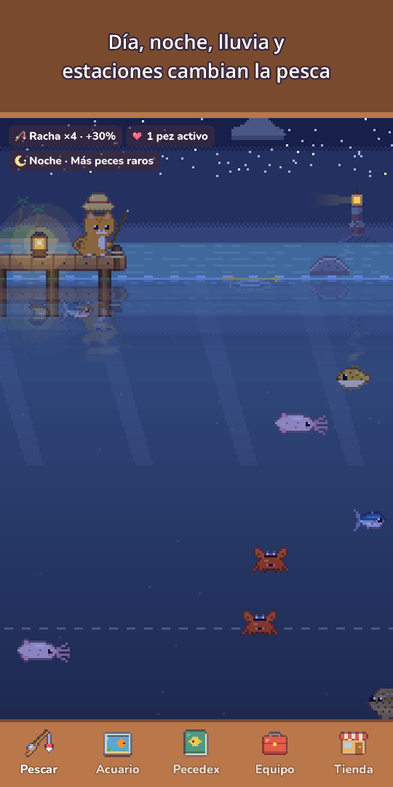
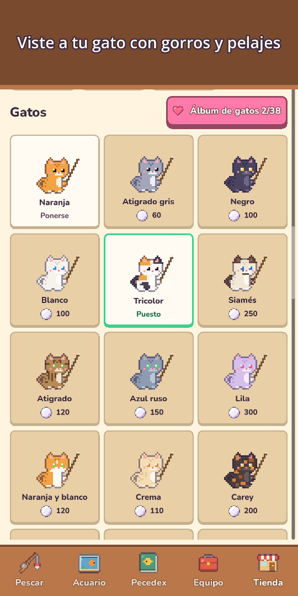
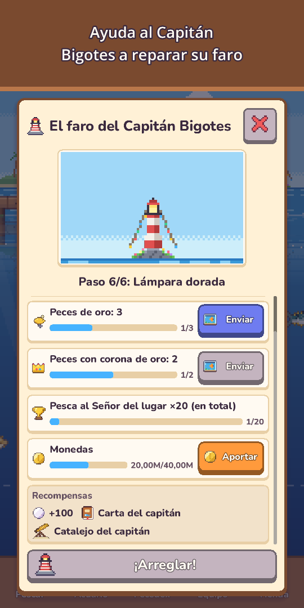
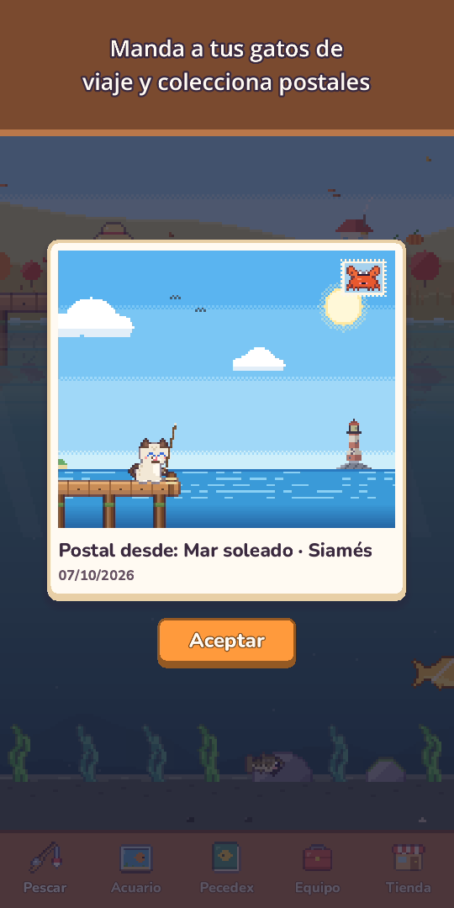

Miaupesca: Pesca gatuna
Pesca relajante con gatos
¡Toma tu caña y tu traje de buceo! Pesca 120 especies, bucea para fotografiar la vida marina y conoce raros gatos sirena.








¡Coge la caña, gatito! El agua está llena de sorpresas.
Miaupesca es un juego de pesca acogedor en pixel art que se juega con un solo dedo. Lanza el sedal, guía el cebo hacia los peces que ves nadar y súbelos con una barra de captura de lo más satisfactoria.
- Pesca con un dedomantén para lanzar, desliza para mover el cebo, mantén para recoger. Toca justo cuando se hunda el corcho para empezar con ventaja (opcional), con ondas, salpicaduras, vibración y monedas que vuelan a tu bolsa
- 120 especies en 10 lugaresEstanque del prado, Río de montaña, Mar soleado, Arrecife de coral, Lago helado, El Abismo, el Templo Sumergido, el Lago de las Nubes, la Isla Volcán y el Manglar
- Busca peces dorados, bancos de peces raros y leyendas como la Carpa lunar o la Ballena estelar, y enfréntate una vez al día al gran Señor de cada lugar
- Buceoponte el traje, nada en cada lugar para fotografiar criaturas que no se pescan y llena tu Álbum de fotos. Con la linterna encontrarás cuevas profundas ocultas
- Gatos sirenaen cada lugar vive un gato sirena, más raro que cualquier leyenda. Llévalo a tu acuario o suéltalo para recibir una bendición de suerte
- 25 señuelos en 5 niveleslos mejores atraen peces más raros, hay señuelos especiales para sirenas y leyendas, ¡y un pez muy fuerte puede romper tu sedal!
- Un cielo vivoel día y la noche siguen tu reloj, la lluvia, la nieve y los arcoíris cambian la pesca, y las estrellas fugaces dan perlas al tocarlas, y las estaciones y la luna real cambian el paisaje. Cada zona muestra el pronóstico de 6 horas y unas ondas doradas marcan dónde pican los grandes
- Pecedexmuchos peces tienen su momento favorito (noche, lluvia, amanecer o estación), tus mayores capturas ganan Coronas de oro y cada primera captura recuerda su cielo: hora, tiempo, estación y lugar
- Acuariotus peces ganan monedas incluso cuando no juegas. Decóralo con un Barco hundido, un Arco de coral y más, completa conjuntos para ganar extra, comparte Diseños del acuario con un código corto y toca un pez para ver dónde lo pescaste y cuántos días lleváis juntos
- Vida gatuna y colecciónsombreros del Gorro de rana a la Corona, pelajes, gorros de temporada y un acogedor Rincón del gato. Manda a un gato de tu familia a un Viaje gatuno de 3 horas a por postales pixeladas y lee su Diario gatuno al volver
- Vecinos y fiestaslos gatos vecinos visitan tu acuario y dejan recuerdos, y la Amistad trae frases nuevas, pequeños regalos y un sombrero de amistad. Torneo semanal, Pesca en grupo cada mes, el Pez visitante de la semana y 5 fiestas al año (Cerezo, Verano, Halloween, Navidad y Año Nuevo) con sellos para decoración exclusiva que se queda para siempre
- Lee las cartas en botella del Capitán Bigotes, un viejo gato farero, y ayúdale a restaurar su faro paso a paso
- Progresa a tu ritmomejora Caña, Carrete, Sedal, Cebo y Pecera, crea cebo con un pez pescado para atraer a esa especie (salvo los legendarios), y disfruta de Misiones diarias, Regalo diario (si faltas un día, no pierdes nada) y regalos por los días juntos
- Extras acogedoresla vista de paisaje oculta los botones para que solo contemples el paisaje, el Diario de pesca guarda un Álbum de fotos con tus últimas 12 fotos del acuario y del Rincón del gato, y cada día un amiguito se esconde en el paisaje a cambio de perlas
- Juega sin conexión, cuando quieras
Gratis para jugar. Compras opcionales: packs de Perlas, Pack de inicio y Pack Mecenas (recompensas sin ver anuncios, sombrero Corona y el doble de límite de ganancias sin conexión). Puedes pescar las 120 especies sin gastar nada.
Sin anuncios obligatorios ni banners. Los anuncios son recompensas opcionales que tú eliges ver, como vender una captura por el doble.
¡Relájate, lanza el sedal y descubre qué pica hoy!